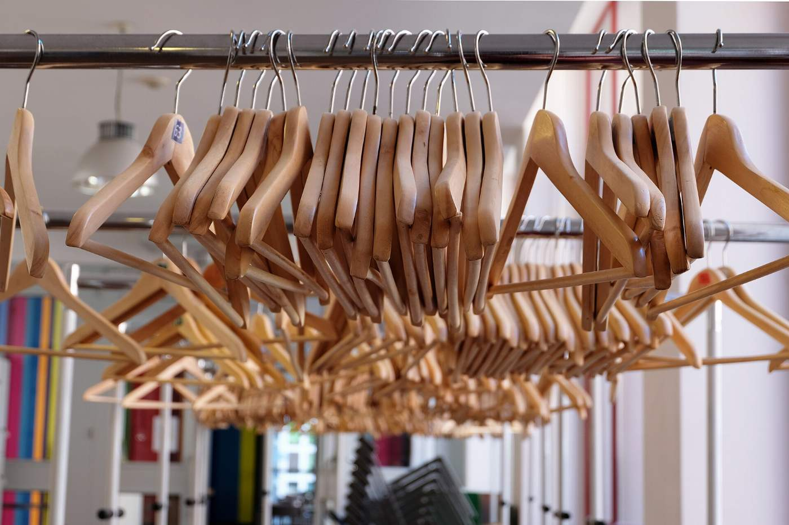

Our story
Modista began with a simple idea: fewer, better clothes. We design every piece in our studio and work with small workshops that share our love of honest materials and careful finishing.
The result is a wardrobe of quiet essentials that look better with every wear, season after season.
2012
Founded in a small studio
90%
Natural and recycled fibres
24
Family-run partner workshops